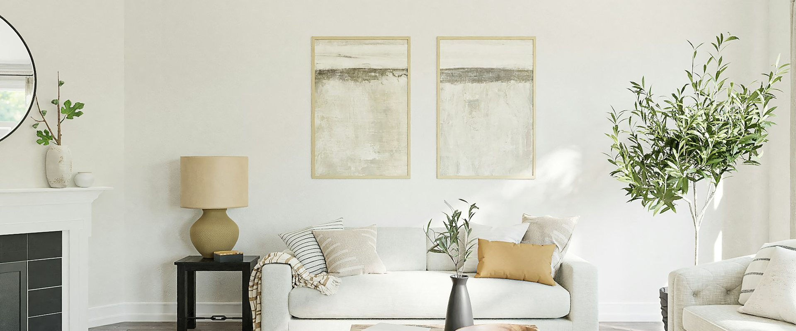
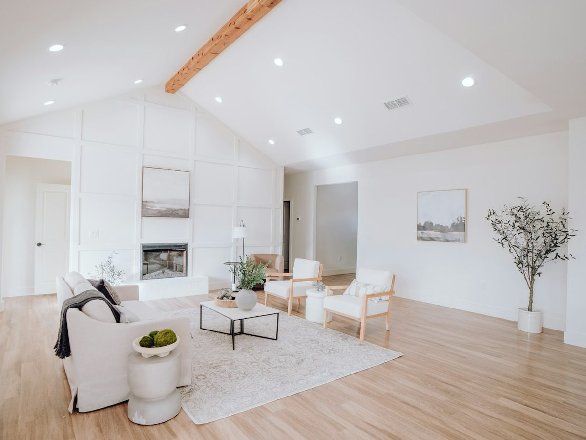
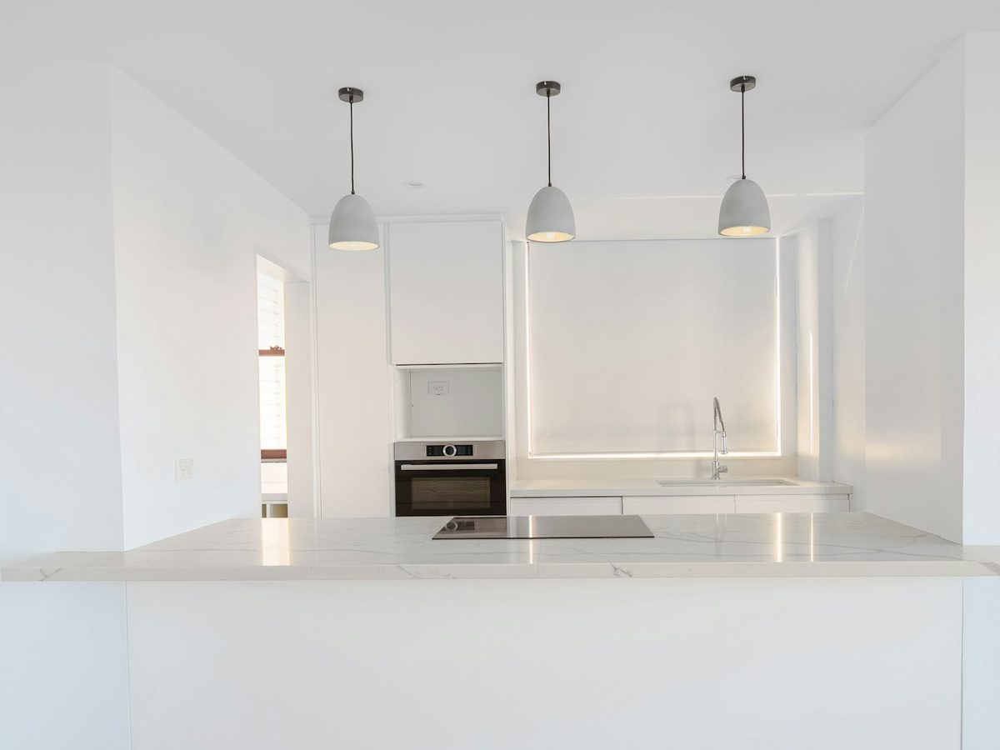
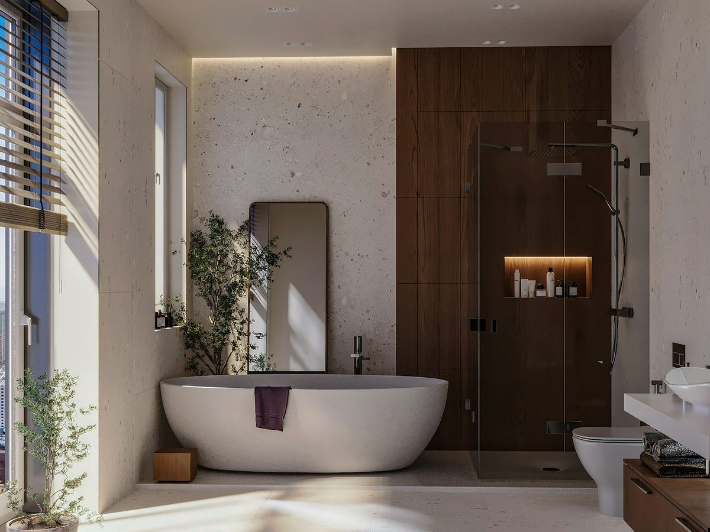

사는 방식을 먼저 듣고
집을 고칩니다
로빈인테리어는 아파트와 주택 리모델링을 첫 상담부터 설계, 시공, 마무리 점검까지 한 팀이 맡아 진행하는 인테리어 회사입니다.
무엇을 고치는지 보기서비스
집 전체를 고칠 때도, 한 곳만 손볼 때도 같은 순서로 꼼꼼히 진행합니다.
-
전체 리모델링
구조와 동선부터 마감까지, 집 전체를 한 흐름으로 다시 계획합니다.
-
주방
조리 순서와 수납 습관을 듣고 상판 높이와 가전 자리를 정합니다.
-
욕실
물 쓰는 자리와 마른 자리를 나누고, 청소하기 쉬운 마감을 고릅니다.
-
부분 시공
도배, 바닥, 조명, 붙박이장처럼 필요한 곳만 골라 손봅니다.
공간 예시
예시 사진이며 실제 시공 사례가 아닙니다.



진행 과정
-
첫 상담
지금 불편한 점과 바라는 생활을 듣습니다.
-
현장 확인
집을 직접 보고 구조와 설비 상태를 살핍니다.
-
설계와 견적
도면과 자재를 정하고 견적서를 항목별로 드립니다.
-
시공
공정이 바뀔 때마다 사진으로 소식을 전합니다.
-
마무리 점검
함께 둘러보며 손볼 곳을 확인하고 정리합니다.
자주 묻는 질문
처음 집을 고치는 분들이 먼저 궁금해하는 것들을 모았습니다.
살면서 공사할 수 있나요?
공사 범위에 따라 다릅니다. 주방이나 욕실처럼 한 곳만 고칠 때는 지내면서 진행하기도 하고, 집 전체를 고칠 때는 비워 두시기를 권합니다. 현장을 본 뒤에 함께 정합니다.
한 곳만 고쳐도 되나요?
네. 욕실 하나, 주방 하나만 고치는 공사도 맡습니다. 나중에 다른 곳을 고칠 계획이 있다면 미리 알려 주세요. 마감이 자연스럽게 이어지도록 계획합니다.
자재는 직접 보고 고를 수 있나요?
설계 단계에서 바닥재, 타일, 도장 색의 견본을 함께 보고 고릅니다. 낮과 밤의 빛에서 색이 어떻게 달라지는지도 현장에서 확인합니다.
공사 중에는 어떻게 소식을 받나요?
공정이 바뀔 때마다 사진과 함께 카카오톡으로 알려 드립니다. 현장에 들르실 때는 미리 말씀해 주시면 담당자가 함께 살펴봅니다.
상담 전에 무엇을 준비하면 좋을까요?
집의 평면도와 지금 불편한 점을 적은 메모가 있으면 충분합니다. 마음에 드는 공간 사진이 있다면 함께 보여 주세요.
견적 · 상담 문의
편한 방법으로 연락해 주세요. 집의 상태와 바라는 점을 듣고 다음 순서를 안내합니다.
가상의 업체이며 실제 견적 · 상담을 받지 않습니다.
- 상담 시간
- 평일 10:00–19:00
- 토요일
- 10:00–15:00
- 쉬는 날
- 일요일 · 공휴일
- 주소
- 서울 가상구 결로 12 (가상 주소)
- 전화
- 02-000-0000